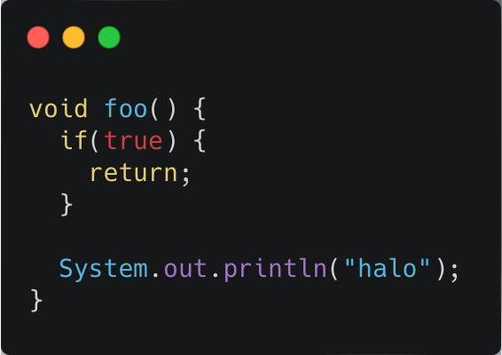
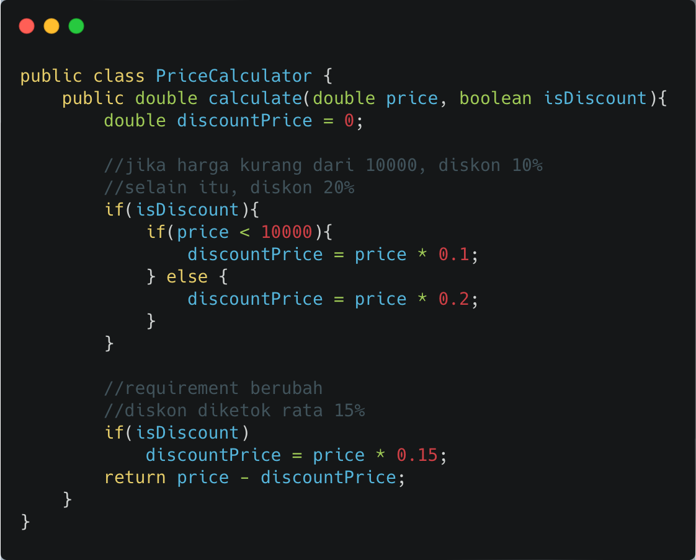
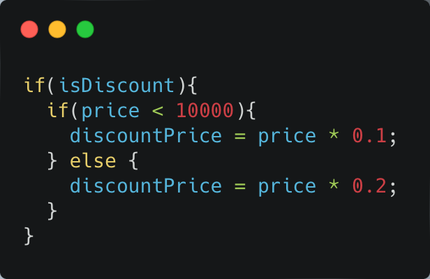
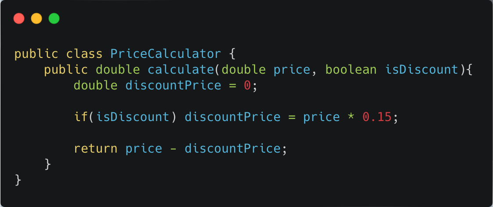

The Dispensable
Dead Code
–– Penjelasan Smell
Smell Dead Code bermakna bagian code yang tidak akan tersentuh ketika sistem dijalankan. Contoh yang paling mudahnya adalah sebagai berikut:
System.out.println("halo"); tidak akan pernah dijalankan karena fungsi foo akan selalu return duluan. Bila Anda menggunakan IDE yang bagus, dead code biasanya akan diberi warning. Misalnya di Eclipse, code System.out.println diatas akan diberikan warning dengan simbol lampu kuning yang memberitahu line of code ini adalah dead code. Bahkan untuk beberapa bahasa pemrograman tertentu, contohnya Golang, dead code bukan sekadar warning. Bila ada dead code program tidak bisa di-build.
–– Penyelesaian
Contohnya di kelas PriceCalculator.java Bayangkan awalnya requirement dari client adalah: diskon diberikan 10% bila harga kurang dari 10.000, jika lebih, diskon 20%. Tiba-tiba, requirement dari client berubah. Client meminta diskon diketok rata 15%. Entah mengapa, programmer tidak menghapus if yang pertama. Ia langsung menambahkan di bagian bawah sebelum return. Secara requirement, ini tidak masalah. Diskon akan selalu 15%. Setelah membaca kode di diatas, kamu tentunya menyadari bahwa bagian kode ini adalah dead code yang tersembunyi.

Bagian ini memang dijalankan, namun variabel discountPrice akan selalu ditimpa di line of code selanjutnya. Sehingga bagian ini aman untuk dibuang.
Kode setelah direfactor:
